Process Picture
|
Description |
|
| 1 | 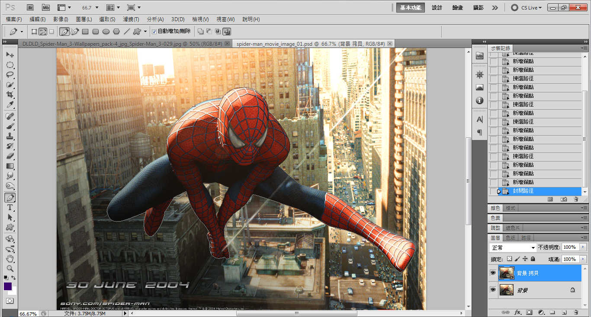 | 1.用 "鋼筆工具" 把蜘蛛俠勾出來 |
| 2 | 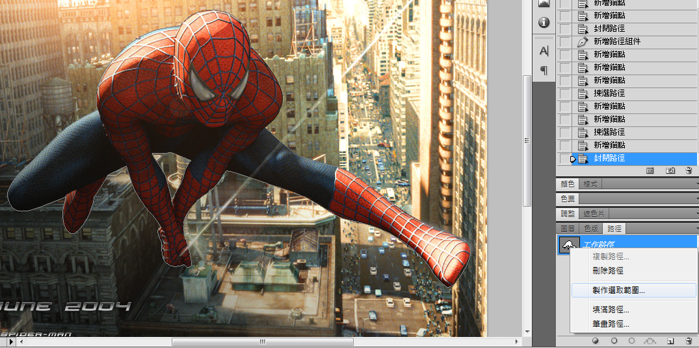 | 2.在 "路徑面板" ，選 ""製作選取範圍" 路徑會變為虛線 |
| 3 | 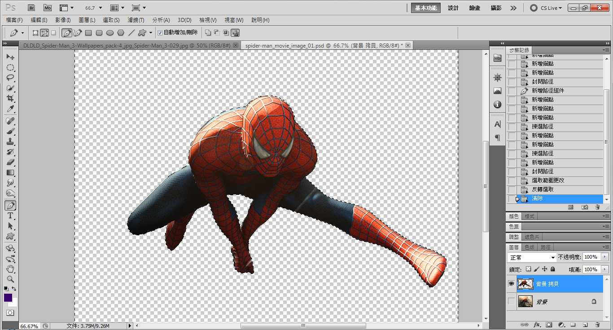 | 3.反向選取(ctrl+shift+I)，然後把背景删除掉 |
| 4 | 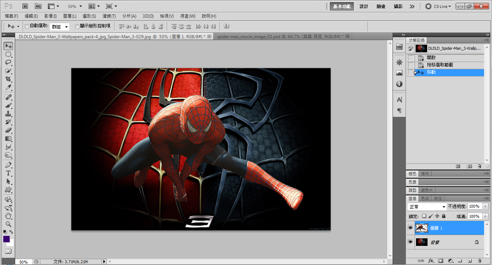 | 4.然後把蜘蛛俠拉進素材背景中 |
| 5 | 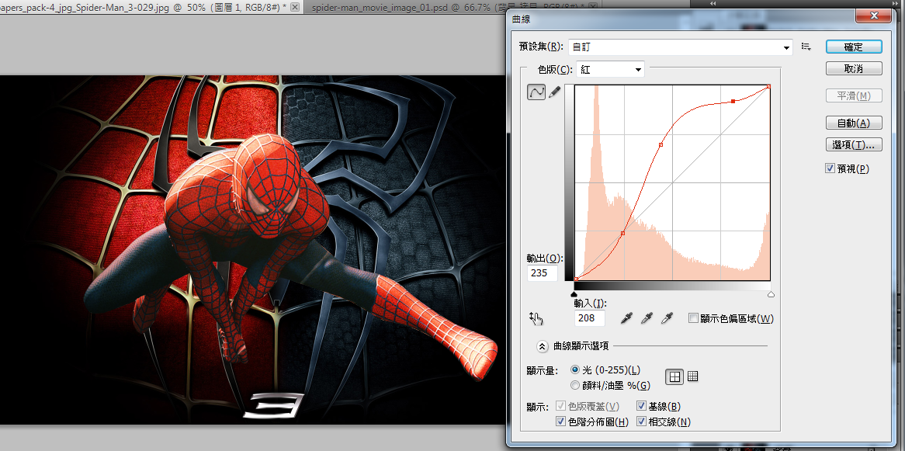 | 5.然後利用 "曲線"，選擇 "紅色色板" 調整 參數曲線見左圖 |
| 6 | 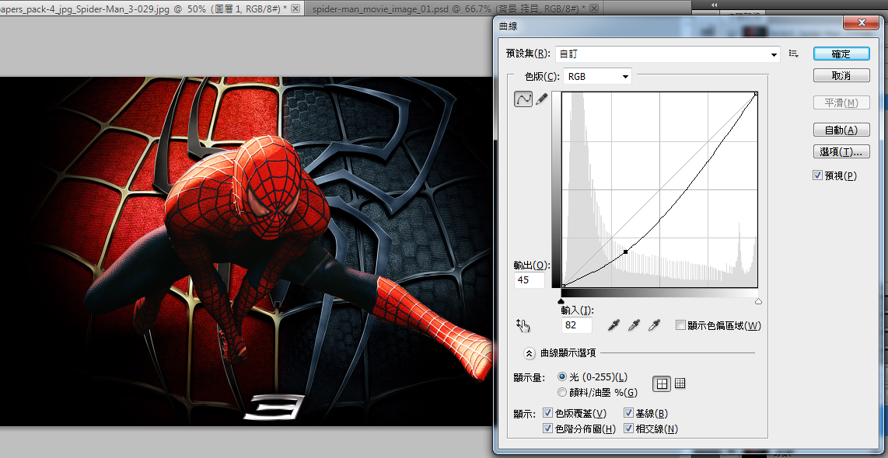 | 6.繼續使用 "曲線"，選擇 "RGB 色板" 調整 參數曲線見左圖 |
| 7 | 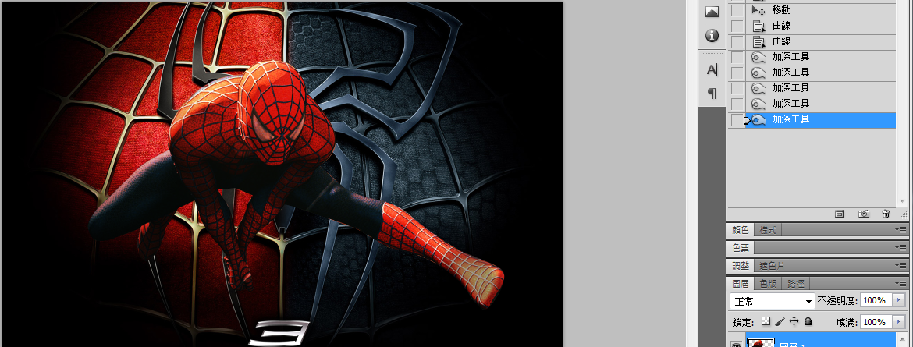 | 7.利用加深工具，擦拭蜘蛛俠背部與左腳腳尖 過光的部分，使反光暗淡一點 |
| 8 | 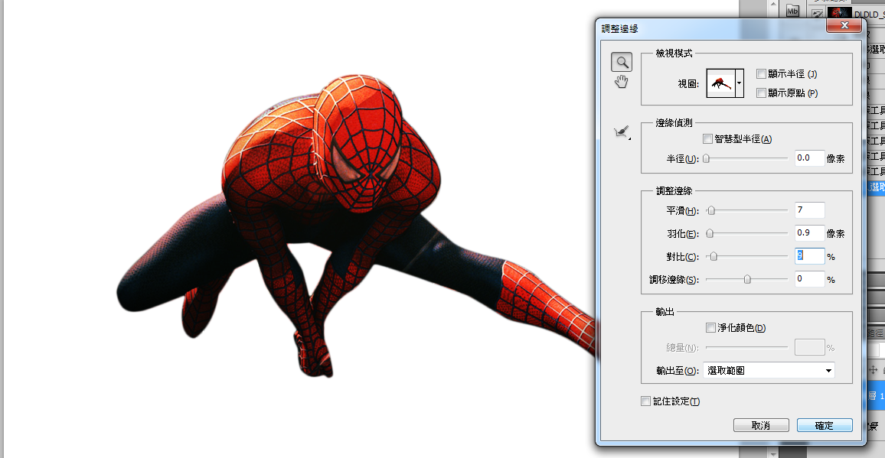 | 8.在蜘蛛俠圖層，選擇" 調整邊緣" 參數見左圖 |
| 9 | 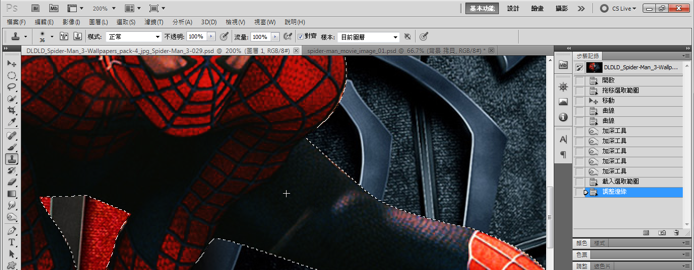 | 9.然後利用 "仿製印章工具"複製大腿部分， 把蜘蛛線蓋住並除去 |
| 10 | 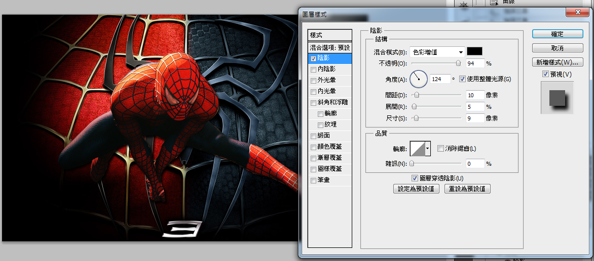 | 10.在圖層樣式中，為蜘蛛俠增加 "陰影" 參數見左圖 |
| 11 | 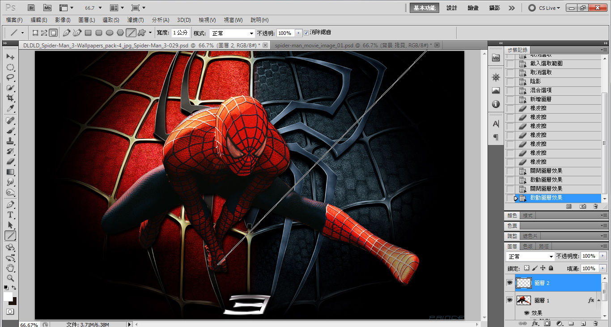 | 11.利用直線工具，為蜘蛛俠增加蜘蛛絲
|
| 12 | 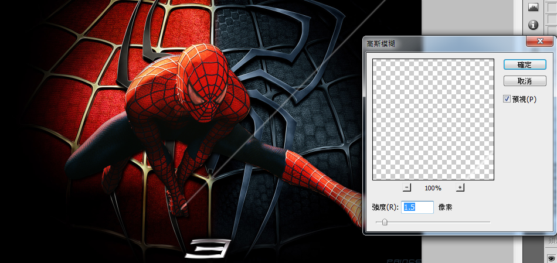 | 12.利用 "高斯模糊" 把蜘蛛絲模糊掉 |
| 13 | 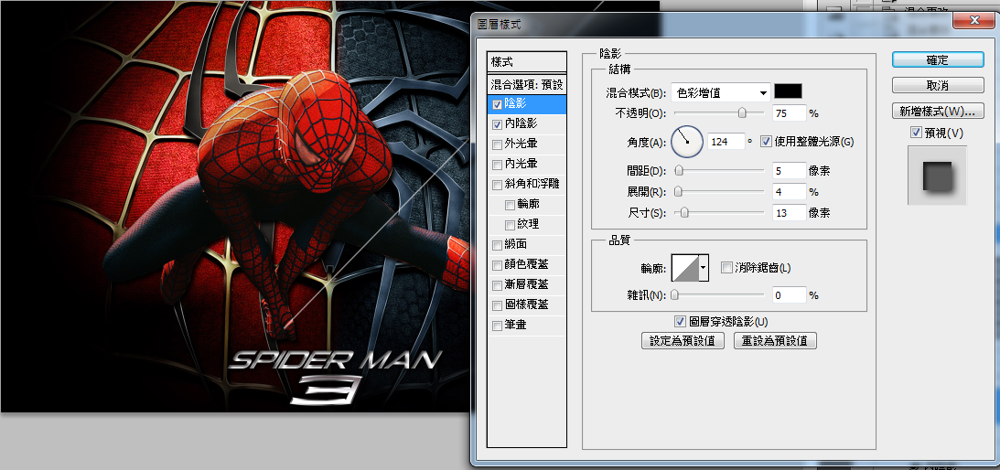 | 13.為了使字融合整體， 為字體增加 "陰影" 與 "內陰影" |
| 14 | 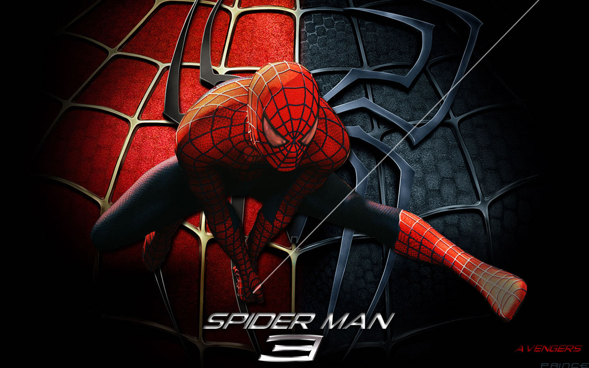 | 14.最終效果 |